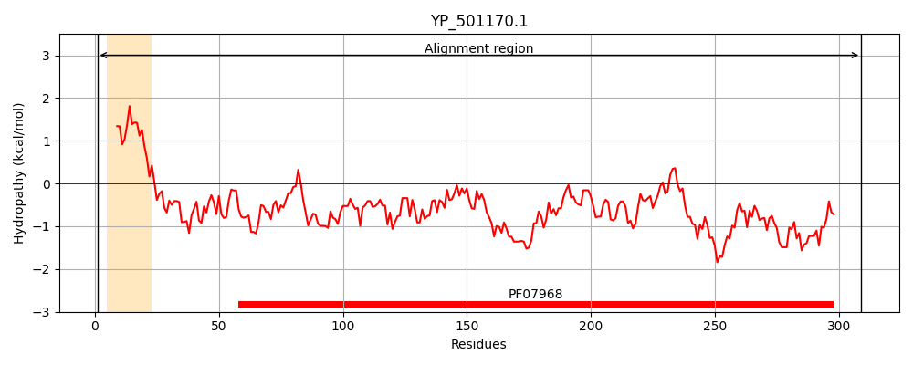
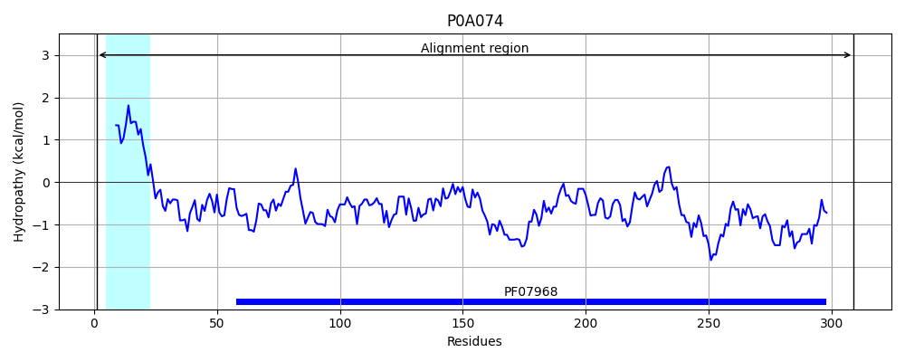
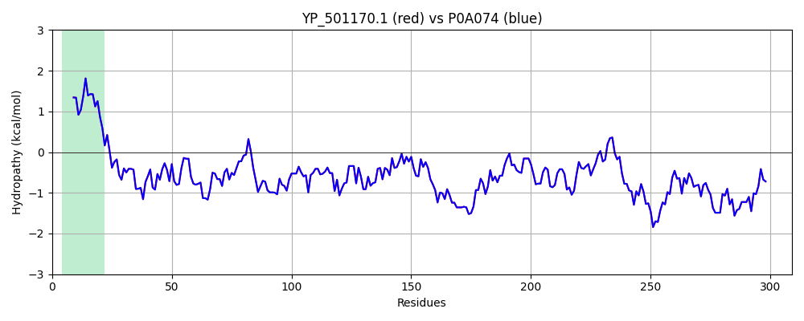

Hit Accession: P0A074
Hit TCID: 1.C.3.4.2
Hit Description: gnl|BL_ORD_ID|8530 gnl|TC-DB|P0A074|1.C.3.4.2 Gamma-hemolysin component A - Staphylococcus aureus.
Mach Len: 309
e:0.000000
Query TMS Count : 1
Hit TMS Count: 1
TMS-Overlap Score: 0.950000
Predicted Substrates:CHEBI:25367;molecule
BLAST Alignment:
Score: 1606 , Bit scores: 623 bits, E-value: 0.0e+00, Alignment length: 309, Percentage identity: 100
Query: 1 MIKNKILTATLAVGLIAPLANPFIEISKAENKIEDIGQGAEIIKRTQDITSKRLAITQNIQFDFVKDKKYNKDALVVKMQGFISSRTTYSDLKKYPYIKRMIWPFQYNISLKTKDSNVDLINYLPKNKIDSADVSQKLGYNIGGNFQSAPSIGGSGSFNYSKTISYNQKNYVTEVESQNSKGVKWGVKANSFVTPNGQVSAYDQYLFAQDPTGPAARDYFVPDNQLPPLIQSGFNPSFITTLSHERGKGDKSEFEITYGRNMDATYAYVTRHRLAVDRKHDAFKNRNVTVKYEVNWKTHEVKIKSITPK 309
MIKNKILTATLAVGLIAPLANPFIEISKAENKIEDIGQGAEIIKRTQDITSKRLAITQNIQFDFVKDKKYNKDALVVKMQGFISSRTTYSDLKKYPYIKRMIWPFQYNISLKTKDSNVDLINYLPKNKIDSADVSQKLGYNIGGNFQSAPSIGGSGSFNYSKTISYNQKNYVTEVESQNSKGVKWGVKANSFVTPNGQVSAYDQYLFAQDPTGPAARDYFVPDNQLPPLIQSGFNPSFITTLSHERGKGDKSEFEITYGRNMDATYAYVTRHRLAVDRKHDAFKNRNVTVKYEVNWKTHEVKIKSITPK
Sbjct: 1 MIKNKILTATLAVGLIAPLANPFIEISKAENKIEDIGQGAEIIKRTQDITSKRLAITQNIQFDFVKDKKYNKDALVVKMQGFISSRTTYSDLKKYPYIKRMIWPFQYNISLKTKDSNVDLINYLPKNKIDSADVSQKLGYNIGGNFQSAPSIGGSGSFNYSKTISYNQKNYVTEVESQNSKGVKWGVKANSFVTPNGQVSAYDQYLFAQDPTGPAARDYFVPDNQLPPLIQSGFNPSFITTLSHERGKGDKSEFEITYGRNMDATYAYVTRHRLAVDRKHDAFKNRNVTVKYEVNWKTHEVKIKSITPK 309 | Protein Hydropathy Plots: |
|---|
|  |  |
Pairwise Alignment-Hydropathy Plot:
|
|---|
|  |